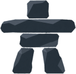
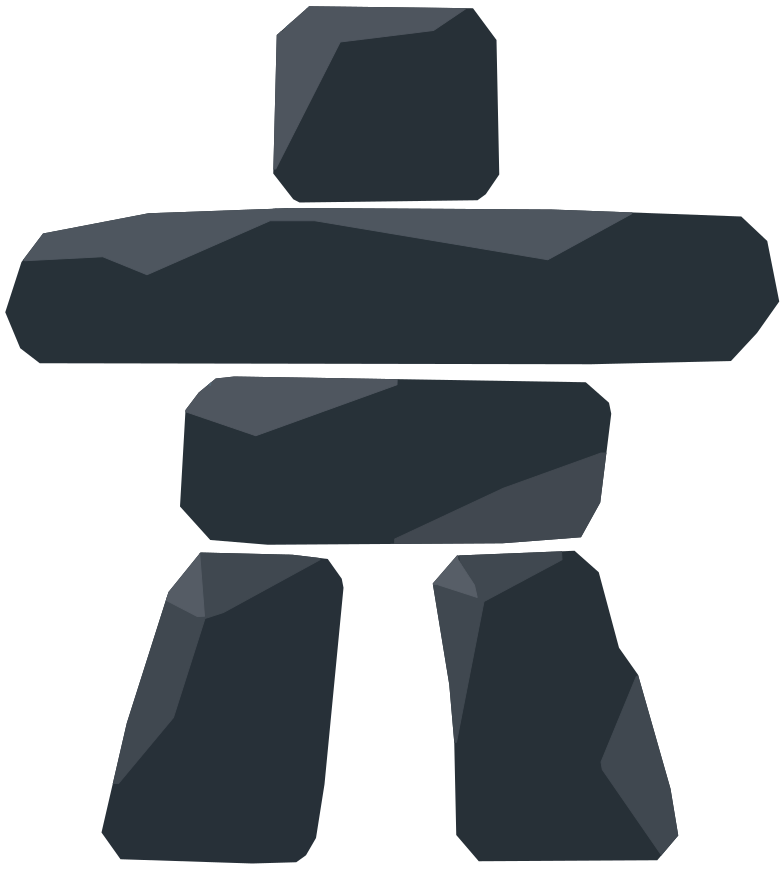

Loader · Marc's stones fall into place
3.4 s loop · legs, torso, arm, head drop 280 ms apart · tilted entry, squash, dust · 1.2 s hold · figure: {{figureLabel}}
STONE SETS · SWITCH WITH THE FIGURE TWEAK

wide
compact
reduced motion
TIMELINE · 3400 MS LOOP
STONESTARTSLANDSENTERS AT
Leg, left0400−10°, x −20
Leg, right280680+12°, x +22
Torso560960−12°, x −18
Arm8401240+10°, x +24
Head11201520−14°, x −14
Hold · fade17602960out by 3260
Fall + straighten · 400 mscubic-bezier(0.55, 0, 1, 0.45)
Land · squash, 240 mscubic-bezier(0.34, 1.56, 0.64, 1)
Dust · 5 specks, 400 mscubic-bezier(0.2, 0.8, 0.3, 1)
Each stone is its own image, placed from stones-wide.json or stones-compact.json and pivoting on its bottom centre. Dust puffs from every contact line: the ground for the legs, then each supporting stone. With Reduce Motion on, the figure appears whole and pulses gently, with no dust. Spec: reports/brand/loader-spec.md.